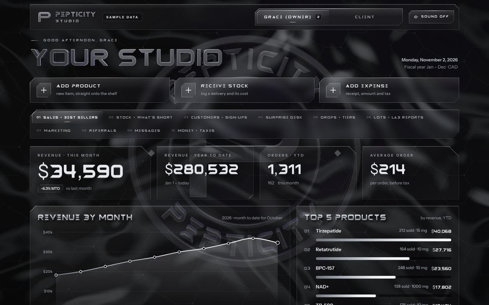
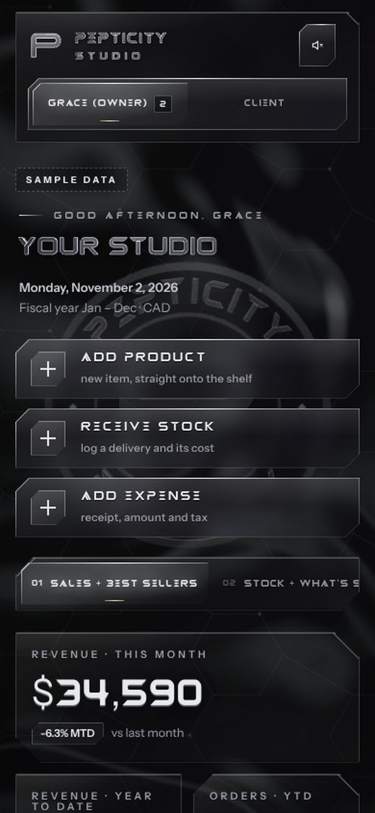
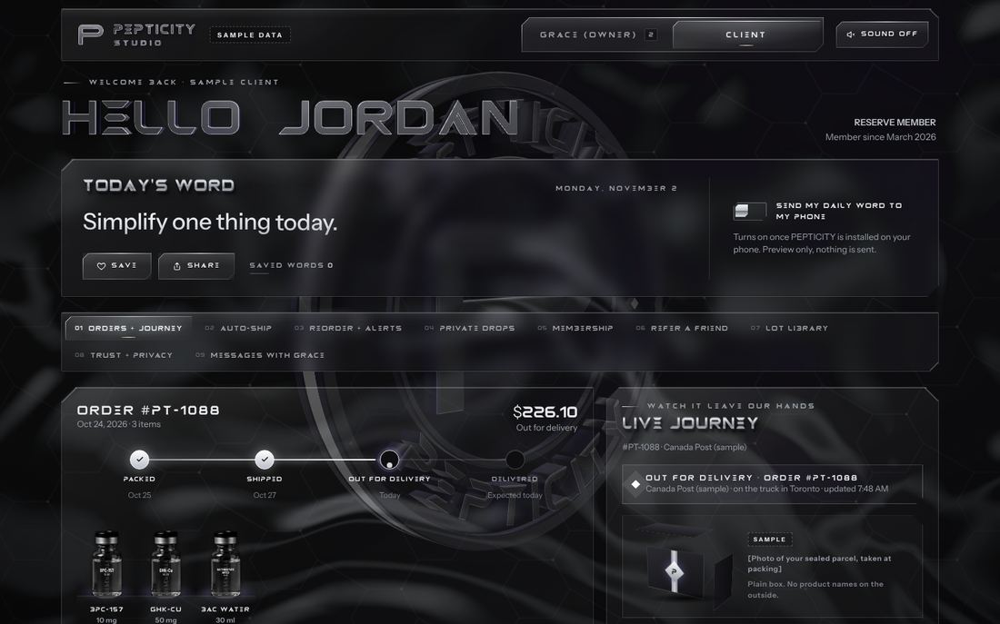
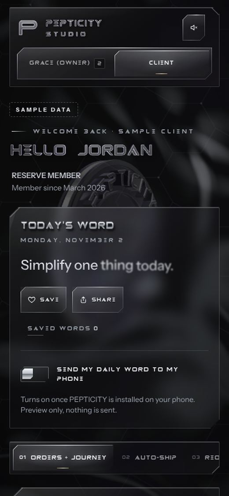
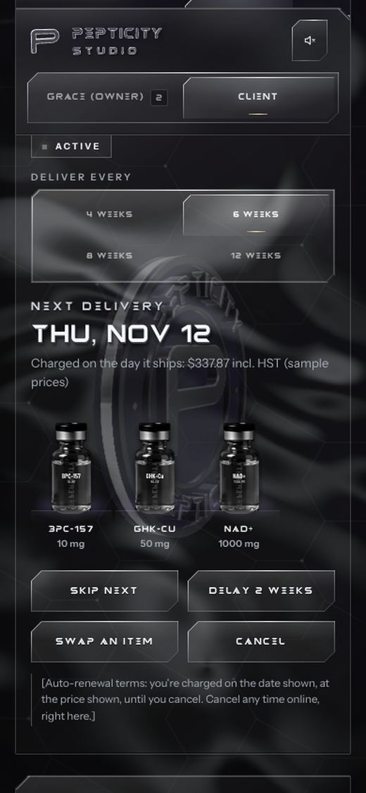
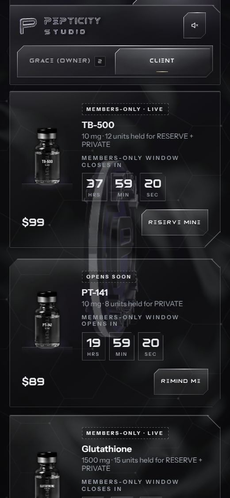
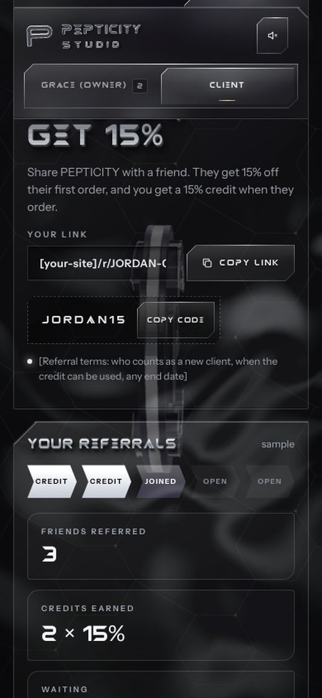
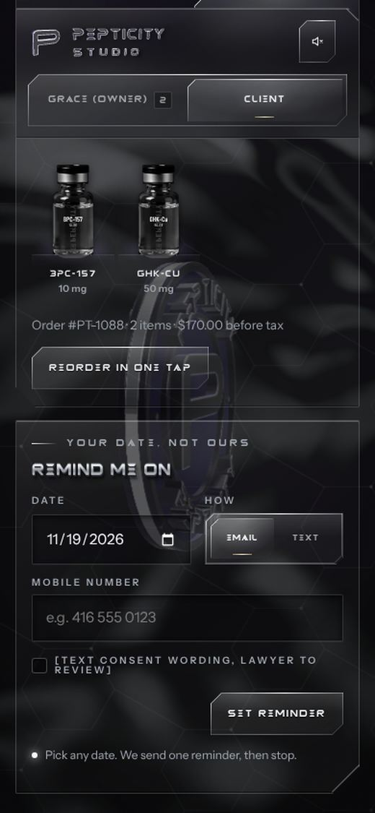
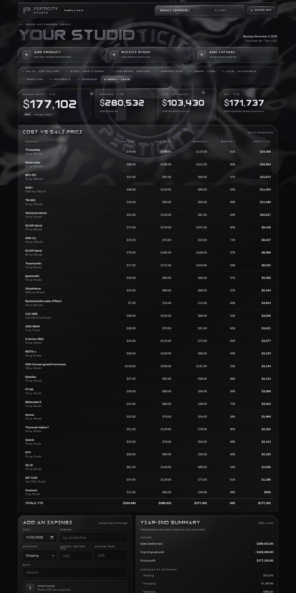
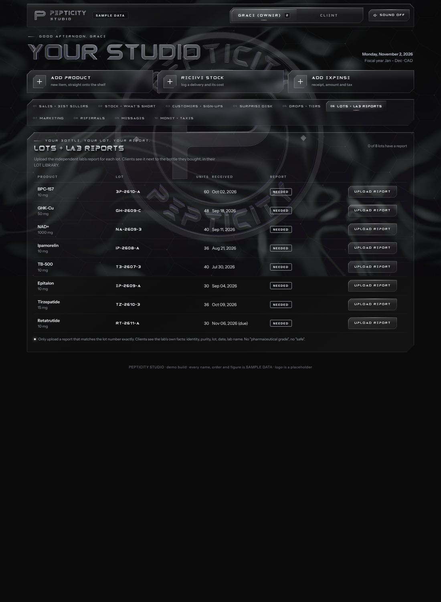

GRACE'S DASHBOARD
for Grace · owner

- TabsSales, Stock, Customers, Surprise desk, Drops, Lots, Marketing, Referrals, Messages, Money
- Health0 errors · no sideways scroll · every button works
PEPTICITY · for the owner · 2 Nov 2026
Her owner dashboard and her customer dashboard, checked in a real browser at desktop and phone size. Nothing on the live pages has changed. Every fix below waits for your pick on the review board.
Finding: both links run the same file. The customer link opens it on the customer view, so one fix covers both.




Ranked by what would hurt most in front of Grace. The look itself is strong. The problems are in the sample data, the copy and the customer link. Purple rows are new today.
| # | Level | What, and the fix | Where | Side |
|---|---|---|---|---|
| 1 | HIGH | A customer can open Grace's owner view (sales, money, every customer). They can tap GRACE (OWNER) in the header, or add #owner to the link. All owner data also ships inside the customer file.Fix: a customer build with no owner switch, no owner data, and #owner ignored. | client/ L1453, L2345 | Customer |
| 2 | HIGH | The 30 Oct compliance blockers are still live on the public links: auto-ship, reminders, countdowns that restart on every visit, spend tiers, "Give 15%, get 15%", lot library, orders naming products.Fix: switch those panels off with no layout change (audit C1–C18). Needs your OK; copy is locked. | AUDIT-COMPLIANCE §C | Both |
| 3 | HIGH | "Bacteriostatic water (Pfizer)" is the top seller (402 units), and it sits in a customer order and in Buy Again. It is an injection supply and a real brand name.Fix: remove it from the sample data. | L2254, L2560, L2578 | Both |
| 4 | HIGH | The store reads as Ontario, not Victoria BC. Tax is Ontario HST 13% (BC is GST 5% + PST 7%), 5 of 8 sample customers are in Ontario, and one message asks "Do you ship to the Island? Moving to Victoria".Fix: BC tax lines and BC sample cities. | L2198, L2264–2275, L2297 | Both |
| 5 | HIGH | The customer referral list shows other customers' names and order dates (Priya S., Devon K., Sam K.).Fix: show counts only. | L2712 | Customer |
| 6 | HIGH | Prescription and unapproved items are offered to customers: Tirzepatide, HGH and Oxytocin in the auto-ship swap list, and TB-500 and PT-141 in timed drops.Fix: limit the customer lists to items counsel clears. | L2228–2254, L2906 | Customer |
| 7 | MED | The page says Monday 2 November, but "This month" is October data. Several labels read "October · month to date" and "week of Oct 26".Fix: pin the sample period, or build the labels from the date. | L1502, L1572, L3177 | Owner |
| 8 | MED | Two forms don't say "Preview only". Messages say "Sent · Grace sees it in her inbox", and the reminder says "We'll remind you … by text".Fix: add "Preview only: nothing was sent." | L2475, L2894 | Customer |
| 9 | MED | The mobile-number field shows even when EMAIL is picked. A CSS rule overrides hidden.Fix: one CSS line, #rmTelWrap[hidden]{display:none}. No other pixel moves. | L210, L1802 | Customer |
| 10 | MED | The monthly letter starts switched ON. Under CASL it must start off until consent is recorded.Fix: default to off. | L2300 | Customer |
| 11 | MED | The footer still says "logo is a placeholder". The P mark is approved.Fix: delete that clause. | L2009 | Both |
| 12 | MED | Bracket placeholders are visible to the reader: [size TBC], [Packaging supplier], [Print shop], "[Text consent wording, lawyer to review]", plus refund and privacy-officer brackets.Fix: plain "to confirm" wording; legal lines wait for counsel. | L1803, L2242, L2306 | Both |
| 13 | MED | Some text is very small: tab numbers, chips and "SAMPLE" tags at 8–9.5px, and labels at 10–10.5px.Fix: labels 12px and up. This touches the locked type sizes, so it needs your OK. | L545, L676 | Both |
| 14 | MED | Tap targets are under 44px: 13px checkboxes, the 32px delete ×, 38px quick replies, and a phone search box 22px tall.Fix: bigger hit areas with the same visible size (padding only). | .sq .x .pc-btn--sm | Both |
| 15 | MED | The keyboard focus ring is missing on buttons and the switch (outline:none), and the tab ring is 1px.Fix: a 2px chrome ring on :focus-visible only. Mouse users see no change. | L991, L1037, L1169 | Both |
| 16 | LOW | The 3D heading reads "HELLO JORDAN" on desktop, with no comma.Fix: check that the 3D font has a comma glyph. | 3D header | Customer |
| 17 | LOW | It always says "GOOD AFTERNOON, GRACE", whatever the time.Fix: set the greeting from the hour. | L1469 | Owner |
| 18 | LOW | The revenue chart has 10 separate tab stops, and the tabs aren't linked to their panels for screen readers.Fix: make the chart one stop read with the arrow keys, and add aria-controls. | L2397, L1734 | Both |
| 19 | LOW | Sample people read as real ("Jordan M., Toronto", $1,284 spent, JORDAN15), even though each one carries a SAMPLE badge.Fix: a small SAMPLE tag on every row. | CUST, REFS | Both |
| 20 | LOW | The public page has no noindex, so search engines can list it.Fix: one meta tag (invisible). | <head> | Both |
Taken today in Chromium from the live code.






Nothing is wired. Full plan in the repo: docs/owner/grace-dashboards/DATA-AND-CONCIERGE-PLAN.md on branch claude/grace-dashboards.
One step at a time. Each step is shown on the board with BEFORE/AFTER pictures, and the next starts only after you answer.
Ship a customer build with no owner switch and no owner data. The customer look stays the same; only the switch leaves the header.
YOUR PICK · board step grace-dash-leakFocus rings for keyboard users, bigger hit areas without bigger visuals, the hidden mobile field, noindex, tab-panel links. Proved with BEFORE/AFTER at the same scroll spots.
YOUR PICK · board step grace-dash-fixesRemove the Pfizer water row. BC tax and BC cities. Pin the sample month. Remove the "logo is a placeholder" line. Add "Preview only" on the two forms. Letter starts off.
YOUR PICK · board step grace-dash-fixesHide auto-ship, reminders, drops, tiers, referral rewards and the lot library behind one switch, with no layout change. They can return once counsel clears them.
YOUR PICK · board step grace-dash-fixesOnly what the lock allows: readable label sizes and one colour accent. Shown as ONE sample first.
YOUR PICK · board step grace-dash-polishBuild the loader with the same sample data and prove nothing moved. Then the backend and sign-in, then read-only orders, stock and money, then the Concierge.
YOUR PICK · board step grace-dash-sourcesOnly after your OK on the steps above. The gh-pages folders dashboard/, graces-dashboard/ and client/ are untouched until then.
LAST · needs your OK to pushTap any one to open the board. Each has a red "drop it" choice.